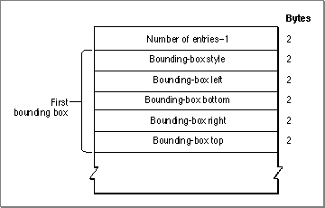

The Bounding-Box Table
The bounding-box table, shown in Figure 4-26, contains the bounding-box measurements for a 1-point font. The bounding boxes used in this table are similar to
the font rectangle, since each describes the smallest rectangle that encloses the shape of each glyph in a given font. There are separate bounding-box entries in the table
for different styles.Figure 4-26 The bounding-box table

The bounding-box table consists of an integer count and a variable number of bounding-box entries, each of which is 10 bytes long. There is no data type defined
for this table.Each bounding-box entry consists of the following elements. There is no data type defined for these entries, each of which is 10 bytes long.
- Number of entries. An integer value that specifies the number of bounding-box entries in this table minus 1.
- Bounding-box style. An integer value that specifies the style code for this bounding-box entry. Style codes are shown in Figure 4-23 on page 4-89.
- Bounding-box left. The coordinate value of the left edge of the bounding box, in 16-bit fixed-point format, with an integer part in the high-order 4 bits and a fractional part in the low-order 12 bits.
- Bounding-box bottom. The coordinate value of the bottom edge of the bounding box, in 16-bit fixed-point format, with an integer part in the high-order 4 bits and a fractional part in the low-order 12 bits.
- Bounding-box right. The coordinate value of the right edge of the bounding box, in 16-bit fixed-point format, with an integer part in the high-order 4 bits and a fractional part in the low-order 12 bits.
- Bounding-box top. The coordinate value of the top edge of the bounding box, in 16-bit fixed-point format, with an integer part in the high-order 4 bits and a fractional part in the low-order 12 bits.